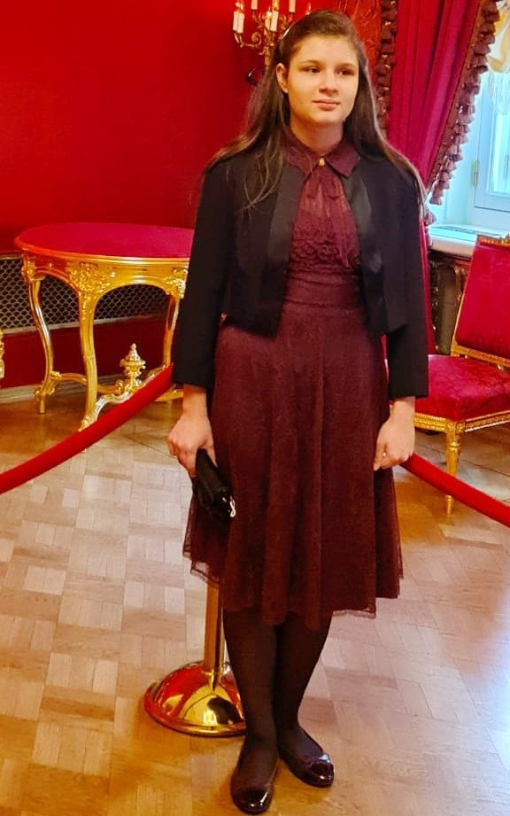

Contents
- About me
- I love...
- Hard skills
- Soft skills
- My projects
- Website that were created with using others' mockups
- Gallery
- Copyright
About me
- I'm 17 years old
- I live in Moscow
- I want to become frontend, then fullstack developer
I love...
- Cats
- Drawing
- Tasty food
- 80s music
- Dress-up games


Hard Skills
- I know the basics of web development (HTML, CSS, JS), including responsive design, well.
- I understand React at quite deep level, with an experience of using hooks like useContext and useEffect.
- I learnt SASS and SCSS.
- I worked with Node.js (npm): used create-react-app, installed npm packages.
- I can work with Git.
- I use Vite and WEbpack in my projects.
- I worked with Jekyll and Eleventy.
Soft Skills
- Organised, hard-working and purposeful
- Have a good memory
- Willing to help others
- Write correctly both in Russian and English
My projects (all only in Russian)
1. Website with quizes
It is the first project I deployed to GitHub Pages. Before December 2024, this website had another, more primitive and old-fashioned, design. Website and repository have historical name - test-about-me.Page
Repository
2. Digital cook
Web app that finds dishes that match cuisines, categories and ingredients chosen by user. There's also Python version but I didn't publish it and not going to do this.Page
Repository
3. Website abot styles in interior design and architecture
This site uses React and @floating-ui/react-dom npm package. Formerly it had a connection with Firestore Database.Page
Repository
4. Blog about style and fashion (Fashion encyclopedia)
I used Bootstrap during creation of this website. It's neccessary to say that it will not be filled with content fast because currently I'm very busy.Page
Repository
Website that were created with using others' mockups
1. Coca
Digital marketing website. Written in English. Mockup and live-preview were not complete, so I had to make up part of my project by myself. Website has several pages, there are the following pages except Home:- About
- Contacts
- Pricing
- Blog (also, there's two posts)
I used the following technologies while working with this project:
- Webpack
- EJS
- Express.js
- BEM Methodology
- SASS
GitHub repository
Source of mockup
2. Aveji
Simple single-page site of furniture shop.Project
GitHub repository
Source of mockup
3. Armata Financial Group
Single-page website sample of which was very old. It's not surprising that I used outdated technologies (like jQuery) working on this project. But it doesn't look bad.Page
Repository
Playlist with lessons
4. Noodz
Bright website, made with basic stack HTML/CSS/JS and Webpack. Original mockup didn't have mobile version, so I had to create it by myself. By the way, my project has real prototype that is much more elaborate.Website
Repository
Author of cross icon that I use on website
Галерея
 


Me in Bolshoi Theatre